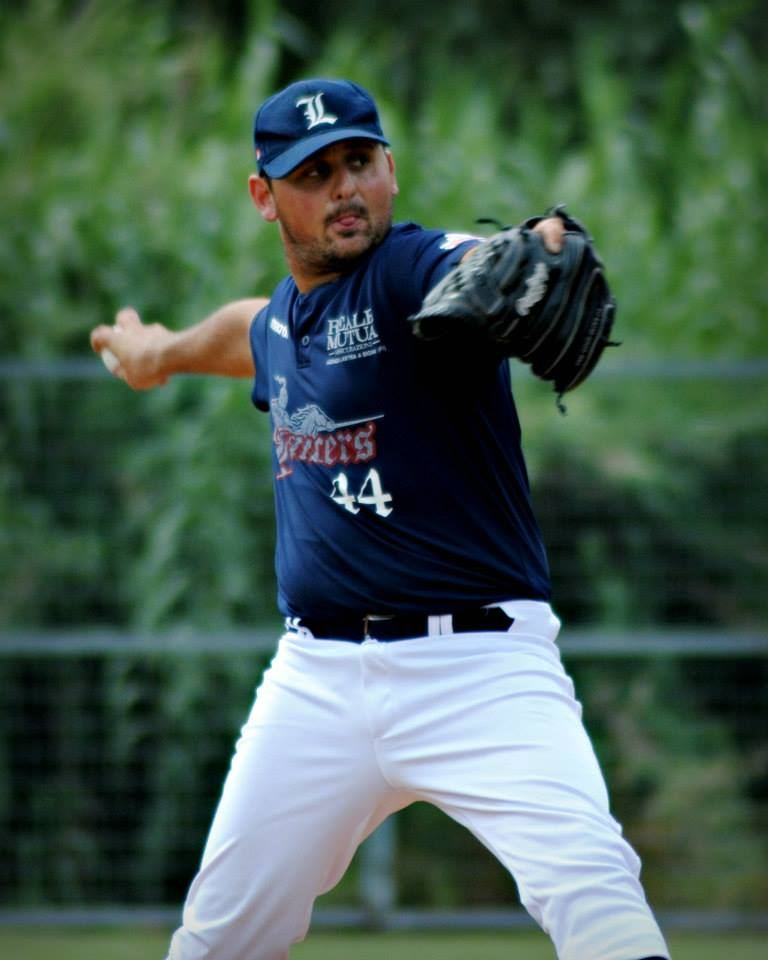

Il Fano toglie l’imbattibilità ai Lancieri dopo le prime due giornate perfette, gara 1 è una partita tiratissima che termina di misura (3-1) a favore dei marchigiani.
Totalmente differente la gara del pomeriggio che vede i lastrigiani imporsi con un perentorio 14 a 2 alla settima ripresa.
La fotografia simbolo della partita di Degl’Innocenti sul monte, una prestazione maiuscola del super utility dei Lancers che per ben 7 riprese tiene a freno il Fano concedendo la miseria di un solo punto.
La difesa resta all’altezza della prova del partente con giocate di ottimo livello e zero errori commessi; non si può dire lo stesso dell’attacco che costruisce poco finalizzando ancor meno
Un gran peccato non regalare al nostro “Jack” Degl’Innocenti una vittoria alla sua prima partenza in categoria anche se gli avversari si sono dimostrati maggiormente determinati nei momenti importanti e hanno, a piccoli passi, finalizzati le poche occasioni nei punti utili alla vittoria. Da segnalare in battuta Baratella con 2 valide colpite.
Al pitcher italo venezuelano Morese viene affidata la palla del partente per gara 2, altra ottima uscita per il pitcher 34enne alla sua terza vittoria in stagione.
Le mazze finalmente si svegliano e colpiscono ben 12 valide, i punti segnati saranno poi 14, complici le troppe basi su ball dei pitcher avversari.

Già al secondo inning i Lancers mettono sui binari giusti la partita segnando 6 volte, al quinto arrivano altri 5 punti, 2 al sesto e un altro al settimo.
Il Fano segna solo due volte al secondo e al quinto inning, quinto inning che sarà anche l’ultimo per Morese. Il tabellino segna all’attivo 7 strike out e solamente 5 valide subite.
C’è spazio per il veterano evergreen Matteo “Marrucci” Vannuzzi, due inning di altissimo livello per lo storico lanciatore lastrigiano con ben 3 eliminazioni al piatto, 0 valide subite ed un solo uomo arrivato in base.
La gara termina anticipatamente per manifesta superiorità, finalmente le mazze hanno fatto il loro dovere supportando una difesa attenta ed un monte di lancio veramente inviolabile.
In battuta si segnalano Ortiz, Degl’Innocenti e Geri con due valide ciascuno.
LE ALTRE CATEGORIE
Prima vittoria dei giovanissimi ragazzi di Serie C ai comandi di Gentini e Manuli, bella soddisfazione dopo il duro lavoro svolto in questi mesi.
Ancora a secco di vittorie l’Under 15, un grandissimo in bocca al lupo per questi ragazzi che dimostrano impegno e passione.
Le vittorie arriveranno!
Riposo per i piccolini dell’Under12.
Vi ricordiamo che questa domenica si terrà a sul campo di Baseball di Lastra a Signa la quarta giornata tra Lancers e Cupra, con l’occasione verrà ritirato il numero del mitico Coach Zalonici ritirato lo scorso Settembre.